Quality Control
Last updated: 2020-02-12
Checks: 7 0
Knit directory: SC_Cardiomyocyte/
This reproducible R Markdown analysis was created with workflowr (version 1.5.0). The Checks tab describes the reproducibility checks that were applied when the results were created. The Past versions tab lists the development history.
Great! Since the R Markdown file has been committed to the Git repository, you know the exact version of the code that produced these results.
Great job! The global environment was empty. Objects defined in the global environment can affect the analysis in your R Markdown file in unknown ways. For reproduciblity it’s best to always run the code in an empty environment.
The command set.seed(20191212) was run prior to running the code in the R Markdown file. Setting a seed ensures that any results that rely on randomness, e.g. subsampling or permutations, are reproducible.
Great job! Recording the operating system, R version, and package versions is critical for reproducibility.
Nice! There were no cached chunks for this analysis, so you can be confident that you successfully produced the results during this run.
Great job! Using relative paths to the files within your workflowr project makes it easier to run your code on other machines.
Great! You are using Git for version control. Tracking code development and connecting the code version to the results is critical for reproducibility. The version displayed above was the version of the Git repository at the time these results were generated.
Note that you need to be careful to ensure that all relevant files for the analysis have been committed to Git prior to generating the results (you can use wflow_publish or wflow_git_commit). workflowr only checks the R Markdown file, but you know if there are other scripts or data files that it depends on. Below is the status of the Git repository when the results were generated:
Ignored files:
Ignored: .Rhistory
Ignored: analysis/dim_reduce.nb.html
Ignored: analysis/figure/
Ignored: code/.Rhistory
Ignored: data/E1_CollectionInfo.tsv
Ignored: data/E2_CollectionInfo.tsv
Ignored: data/E3_CollectionInfo.tsv
Ignored: data/bg_genes.txt
Ignored: data/cluster2_markers.RData
Ignored: data/de_genes.txt
Ignored: data/de_genes_down.txt
Ignored: data/de_genes_up.txt
Ignored: data/demux_exp1.RDS
Ignored: data/demux_exp2.RDS
Ignored: data/demux_exp3.RDS
Ignored: data/demuxlet_data.RData
Ignored: data/geneinfo.rds
Ignored: data/monocle_from_seurat_fulldata_sctransform_mitoregress_graphed.RDS
Ignored: data/seurat_combined.RDS
Ignored: data/seurat_filtered.RDS
Ignored: data/seurat_normalized.RDS
Ignored: data/seurat_pca.RDS
Ignored: data/seurat_round1_allsinglets.RDS
Ignored: data/seurat_round1_unfiltered.RDS
Ignored: data/seurat_round2_allsinglets.RDS
Ignored: data/seurat_round2_unfiltered.RDS
Ignored: data/seurat_round3_allsinglets.RDS
Ignored: data/seurat_round3_unfiltered.RDS
Ignored: data/seurat_umap.RDS
Ignored: output/gsea/
Ignored: wrappers/
Untracked files:
Untracked: analysis/dim_reduce.Rmd
Untracked: analysis/update_workflow.R
Untracked: code/create_seurat_object.R
Untracked: code/create_seurat_round1.R
Untracked: code/create_seurat_round2.R
Untracked: code/create_seurat_round3.R
Untracked: code/directory_navigation.R
Untracked: code/filter_seurat.R
Untracked: code/gsea/
Untracked: code/merge_seurat.R
Untracked: code/normalize_seurat.R
Untracked: code/pca_seurat.R
Untracked: code/umap_seurat.R
Untracked: intermediate_images/
Untracked: junk/
Unstaged changes:
Modified: .gitignore
Deleted: analysis/demuxlet_analysis.Rmd
Modified: analysis/index.Rmd
Deleted: analysis/pseudotime.Rmd
Deleted: analysis/quality_control_123.Rmd
Deleted: analysis/seurat_diffex.Rmd
Modified: code/demuxlet_dataload.R
Note that any generated files, e.g. HTML, png, CSS, etc., are not included in this status report because it is ok for generated content to have uncommitted changes.
These are the previous versions of the R Markdown and HTML files. If you’ve configured a remote Git repository (see ?wflow_git_remote), click on the hyperlinks in the table below to view them.
| File | Version | Author | Date | Message |
|---|---|---|---|---|
| Rmd | cc2c48a | jmp448 | 2020-02-12 | wflow_publish(“./analysis/quality_control.Rmd”) |
| html | acb4d71 | jmp448 | 2019-12-13 | Build site. |
| Rmd | a3b8f81 | jmp448 | 2019-12-13 | New structure, more processing done in code and more viz in public |
This notebook runs through some checks for quality control of the sequencing and Demuxlet (cell assignment) results. Seurat object construction based on the pipeline created by Reem Elorbany here.
First, we load necessary libraries and pull the data that file saved
library(ggplot2)
library(ggridges)
Attaching package: 'ggridges'The following object is masked from 'package:ggplot2':
scale_discrete_manualsuppressMessages(library(Seurat))Warning in system2(command = python, args = paste0("\"", config_script, :
running command ''/home/jpopp/.virtualenvs/r-reticulate/bin/python' "/home/
jpopp/R/x86_64-pc-linux-gnu-library/3.6/reticulate/config/config.py" 2>/
dev/null' had status 1In demuxlet_dataload.R (in code/), we created three dataframes, one for each collection day. These dataframes tell us, for each collection, how many assignments were made of cells to singlets, doublets, and ambiguous, and among these how many were sense/ nonsense.
demux1 <- readRDS("./data/demux_exp1.RDS")
demux2 <- readRDS("./data/demux_exp2.RDS")
demux3 <- readRDS("./data/demux_exp3.RDS")Now, we want to break down that ‘other’ category. How many assignments were made to singlet vs doublet vs ambiguous, and how many of each assignment type made sense? We define sense as an assignment consisting only of individuals that are actually present in the collection, and nonsense as any assignment to an individual not present in the current collection.
ggplot(demux1, aes(x = collection, y = counts, fill = assignment)) +
geom_bar(stat = 'identity', position = 'stack') +
facet_grid(~colday) + ggtitle("Round 1 of Collections")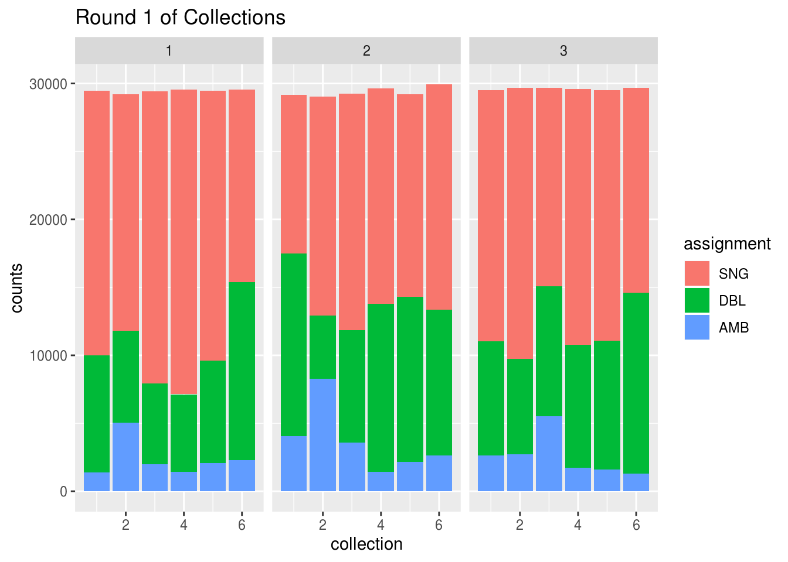
ggplot(demux2, aes(x = collection, y = counts, fill = assignment)) +
geom_bar(stat = 'identity', position = 'stack') +
facet_grid(~colday) + ggtitle("Round 2 of Collections")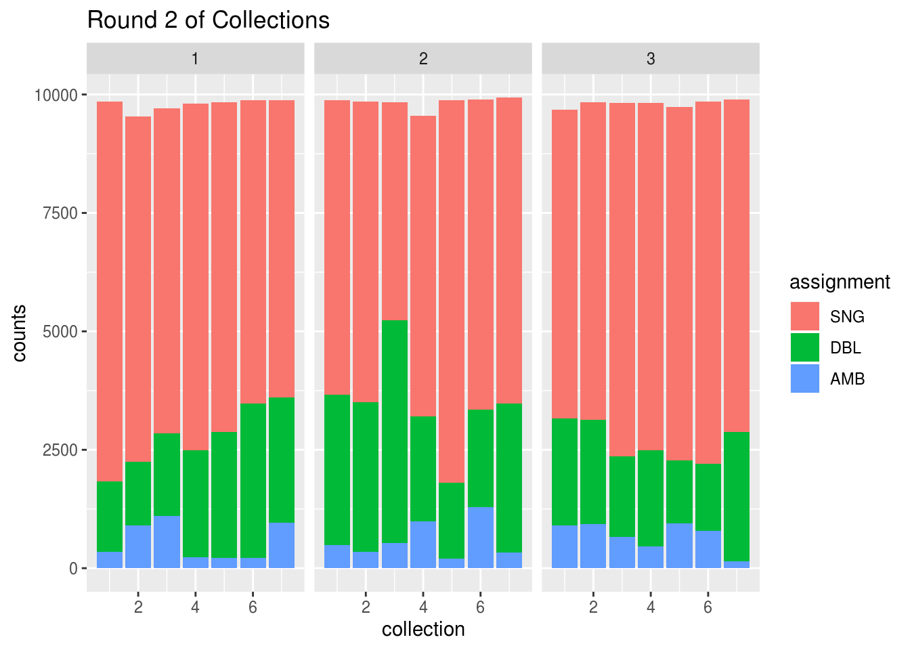
ggplot(demux3, aes(x = collection, y = counts, fill = assignment)) +
geom_bar(stat = 'identity', position = 'stack') +
facet_grid(~colday) + ggtitle("Round 3 of Collections")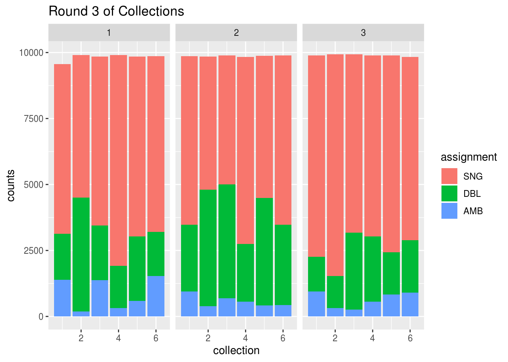
Now we’re going to take a look at some other qc metrics
sc1 <- readRDS("./data/seurat_round1_allsinglets.RDS")
sc2 <- readRDS("./data/seurat_round2_allsinglets.RDS")
sc3 <- readRDS("./data/seurat_round3_allsinglets.RDS")Let’s take a look at the distributions of the read counts
exp1 <- cbind(data.frame(sc1$nCount_RNA), c(data.frame(sc1$nFeature_RNA, data.frame(sc1$percent.mito), data.frame(sc1$diffday), data.frame(sc1$individual))))
exp2 <- cbind(data.frame(sc2$nCount_RNA), c(data.frame(sc2$nFeature_RNA, data.frame(sc2$percent.mito), data.frame(sc2$diffday), data.frame(sc2$individual))))
exp3 <- cbind(data.frame(sc3$nCount_RNA), c(data.frame(sc3$nFeature_RNA), data.frame(sc3$percent.mito), data.frame(sc3$diffday), data.frame(sc3$individual)))I’ll also make a combined df
colnames(exp1) <- c("nCount_RNA", "nFeature_RNA", "percent.mito", "diffday", "individual")
exp1$exp <- rep(1, nrow(exp1))
colnames(exp2) <- c("nCount_RNA", "nFeature_RNA", "percent.mito", "diffday", "individual")
exp2$exp <- rep(2, nrow(exp2))
colnames(exp3) <- c("nCount_RNA", "nFeature_RNA", "percent.mito", "diffday", "individual")
exp3$exp <- rep(3, nrow(exp3))
exp123 <- rbind(exp1, exp2, exp3)With this we can create our plots
Quality control for all three rounds of experiments combined (19 individuals)
max.98 <- quantile(exp123$nCount_RNA, 0.98)
ggplot(exp123, aes(x = nCount_RNA, y = individual, height=..density..)) +
geom_density_ridges() +
scale_x_continuous(limits = c(0, max.98), breaks=seq(0, max.98, max.98)) +
ggtitle("Read counts by individual (all)")Picking joint bandwidth of 114Warning: Removed 11508 rows containing non-finite values
(stat_density_ridges).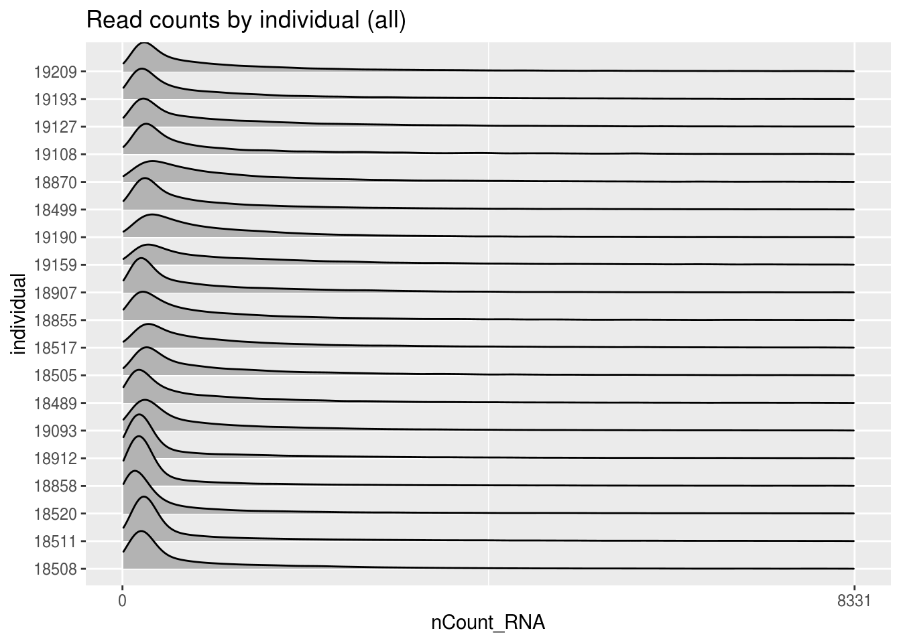
ggplot(exp123, aes(x = nCount_RNA, y = individual, height=..density..)) +
geom_density_ridges() +
scale_x_continuous(limits = c(0, max.98), breaks=seq(0, max.98, max.98)) +
facet_grid(~diffday)+
ggtitle("Read counts by individual, separated by diffday (all)")Picking joint bandwidth of 172Picking joint bandwidth of 184Picking joint bandwidth of 208Picking joint bandwidth of 138Picking joint bandwidth of 135Picking joint bandwidth of 137Picking joint bandwidth of 165Warning: Removed 11508 rows containing non-finite values
(stat_density_ridges).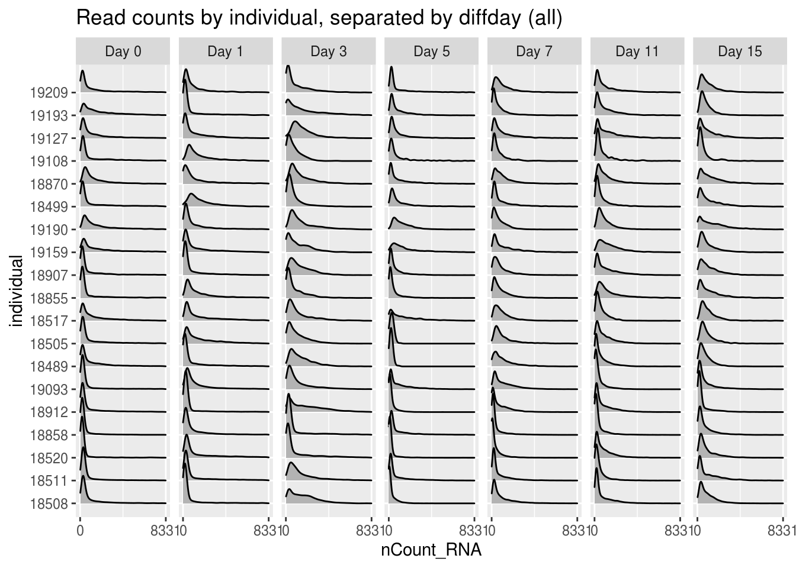
max.98 <- quantile(exp123$nCount_RNA, 0.98)
ggplot(exp123, aes(x = nCount_RNA, y = diffday, height=..density..)) +
geom_density_ridges() +
scale_x_continuous(limits = c(0, max.98), breaks=seq(0, max.98, max.98)) +
ggtitle("Read counts by diffday (all)")Picking joint bandwidth of 88.5Warning: Removed 11508 rows containing non-finite values
(stat_density_ridges).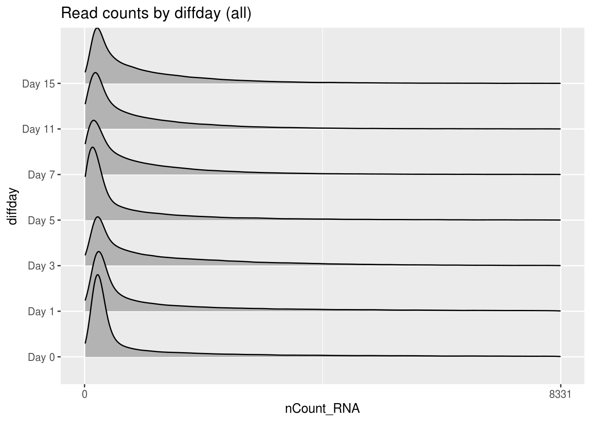
ggplot(exp123, aes(x = nCount_RNA, y = diffday, height=..density..)) +
geom_density_ridges() +
scale_x_continuous(limits = c(0, max.98), breaks=seq(0, max.98, max.98)) +
facet_grid(~individual) +
ggtitle("Read counts by diffday, separated by individual (all)")Picking joint bandwidth of 108Picking joint bandwidth of 131Picking joint bandwidth of 112Picking joint bandwidth of 78Picking joint bandwidth of 107Picking joint bandwidth of 124Picking joint bandwidth of 142Picking joint bandwidth of 170Picking joint bandwidth of 218Picking joint bandwidth of 157Picking joint bandwidth of 155Picking joint bandwidth of 248Picking joint bandwidth of 194Picking joint bandwidth of 171Picking joint bandwidth of 205Picking joint bandwidth of 181Picking joint bandwidth of 196Picking joint bandwidth of 186Picking joint bandwidth of 206Warning: Removed 11508 rows containing non-finite values
(stat_density_ridges).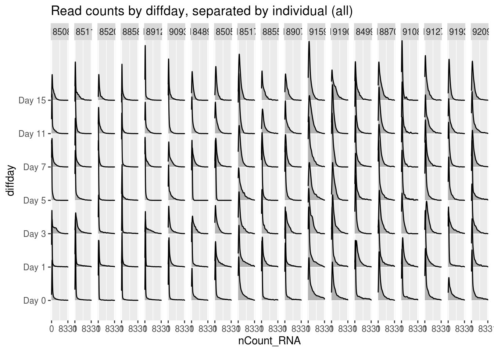
max.98 <- quantile(exp123$nFeature_RNA, 0.98)
ggplot(exp123, aes(x = nFeature_RNA, y = individual, height=..density..)) +
geom_density_ridges() +
scale_x_continuous(limits = c(0, max.98), breaks=seq(0, max.98, max.98)) +
ggtitle("Gene counts by individual (all)")Picking joint bandwidth of 58.1Warning: Removed 11498 rows containing non-finite values
(stat_density_ridges).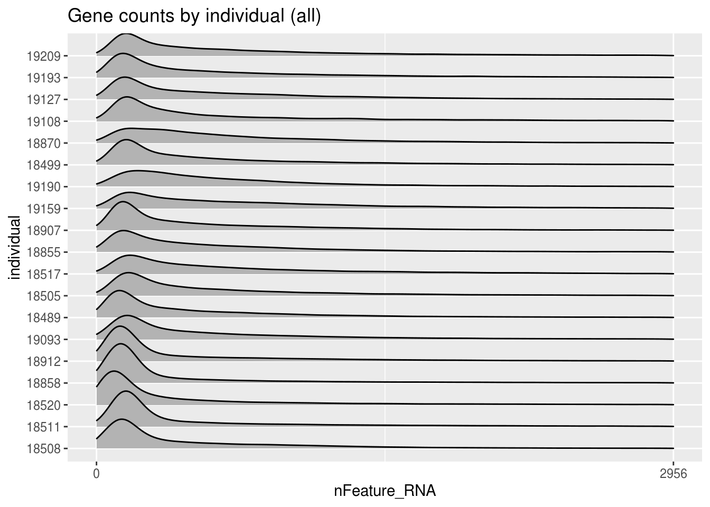
ggplot(exp123, aes(x = nFeature_RNA, y = individual, height=..density..)) +
geom_density_ridges() +
scale_x_continuous(limits = c(0, max.98), breaks=seq(0, max.98, max.98)) +
facet_grid(~diffday) +
ggtitle("Gene counts by individual, separated by diffday (all)")Picking joint bandwidth of 81.3Picking joint bandwidth of 89.3Picking joint bandwidth of 92Picking joint bandwidth of 68.7Picking joint bandwidth of 69.7Picking joint bandwidth of 69.4Picking joint bandwidth of 82.7Warning: Removed 11498 rows containing non-finite values
(stat_density_ridges).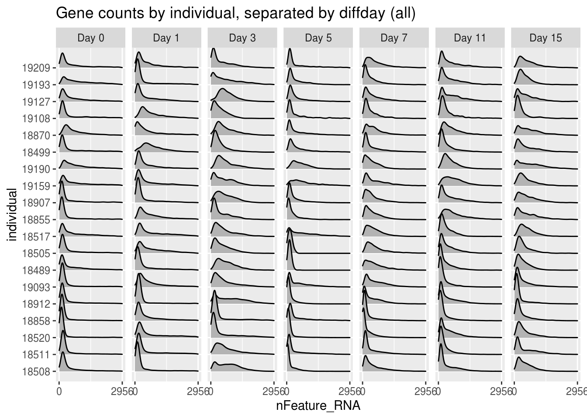
max.98 <- quantile(exp123$nFeature_RNA, 0.98)
ggplot(exp123, aes(x = nFeature_RNA, y = diffday, height=..density..)) +
geom_density_ridges() +
scale_x_continuous(limits = c(0, max.98), breaks=seq(0, max.98, max.98)) +
ggtitle("Gene counts by diffday (all)")Picking joint bandwidth of 45.8Warning: Removed 11498 rows containing non-finite values
(stat_density_ridges).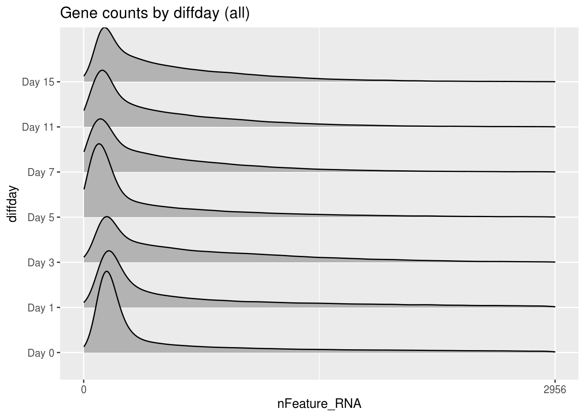
ggplot(exp123, aes(x = nFeature_RNA, y = diffday, height=..density..)) +
geom_density_ridges() +
scale_x_continuous(limits = c(0, max.98), breaks=seq(0, max.98, max.98)) +
facet_grid(~individual) +
ggtitle("Gene counts by diffday, separated by individual (all)")Picking joint bandwidth of 54.8Picking joint bandwidth of 66.7Picking joint bandwidth of 56.9Picking joint bandwidth of 43.9Picking joint bandwidth of 50.5Picking joint bandwidth of 64.1Picking joint bandwidth of 70.3Picking joint bandwidth of 77Picking joint bandwidth of 98.7Picking joint bandwidth of 80.9Picking joint bandwidth of 75.4Picking joint bandwidth of 109Picking joint bandwidth of 90.9Picking joint bandwidth of 85.6Picking joint bandwidth of 99.2Picking joint bandwidth of 92.6Picking joint bandwidth of 94.6Picking joint bandwidth of 85.6Picking joint bandwidth of 105Warning: Removed 11498 rows containing non-finite values
(stat_density_ridges).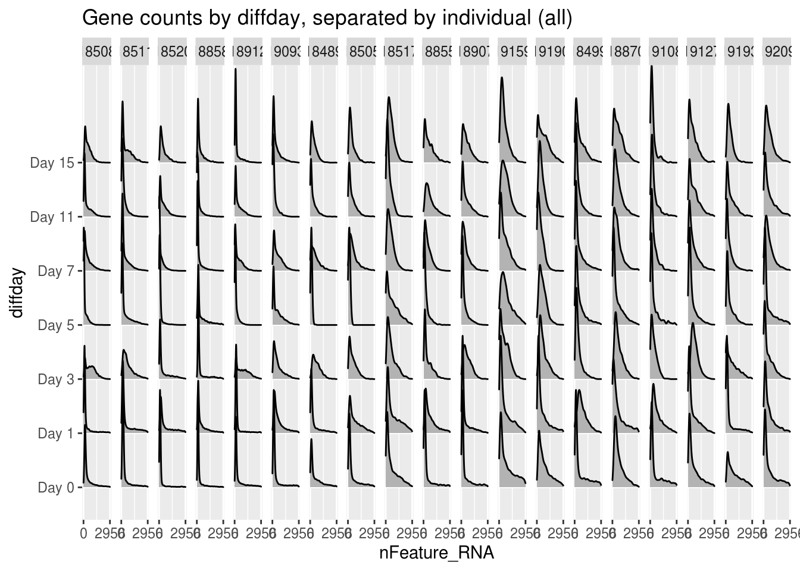
ggplot(exp123, aes(x = percent.mito, y = individual, height=..density..)) +
geom_density_ridges() +
scale_x_continuous(limits = c(0, 100), breaks=seq(0, 100, 20)) +
ggtitle("Mito counts by individual (all)")Picking joint bandwidth of 1.49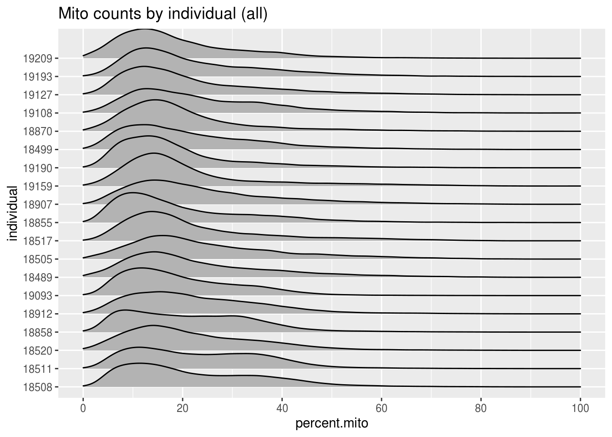
ggplot(exp123, aes(x = percent.mito, y = individual, height=..density..)) +
geom_density_ridges() +
scale_x_continuous(limits = c(0, 100), breaks=seq(0, 100, 50)) +
facet_grid(~diffday) +
ggtitle("Mito counts by individual, separated by diffday (all)")Picking joint bandwidth of 2.22Picking joint bandwidth of 2.02Picking joint bandwidth of 1.68Picking joint bandwidth of 2.65Picking joint bandwidth of 1.92Picking joint bandwidth of 2.09Picking joint bandwidth of 2.29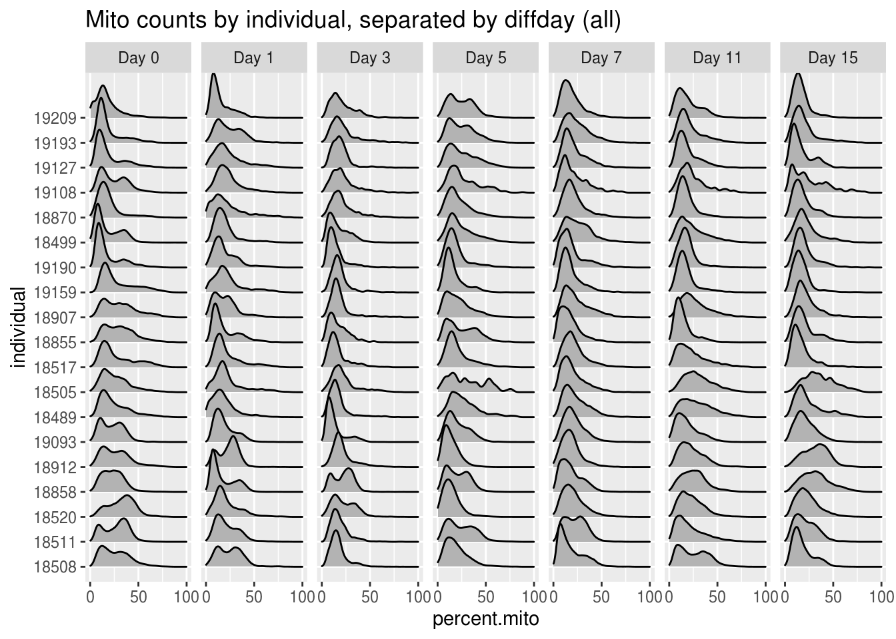
ggplot(exp123, aes(x = percent.mito, y = diffday, height=..density..)) +
geom_density_ridges() +
scale_x_continuous(limits = c(0, 100), breaks=seq(0, 100, 20)) +
ggtitle("Mito counts by diffday (all)")Picking joint bandwidth of 1.23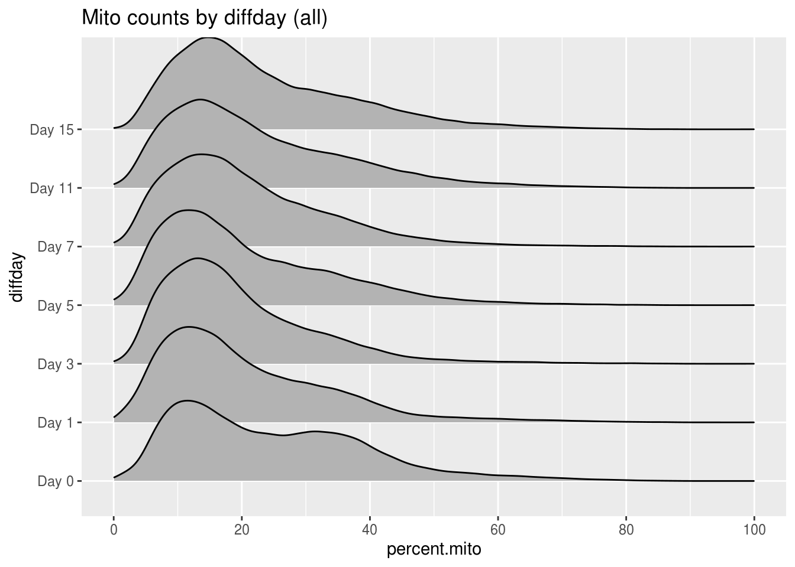
ggplot(exp123, aes(x = percent.mito, y = diffday, height=..density..)) +
geom_density_ridges() +
scale_x_continuous(limits = c(0, 100), breaks=seq(0, 100, 50)) +
facet_grid(~individual) +
ggtitle("Mito counts by diffday, separated by individual (all)")Picking joint bandwidth of 1.93Picking joint bandwidth of 1.9Picking joint bandwidth of 1.84Picking joint bandwidth of 1.87Picking joint bandwidth of 1.67Picking joint bandwidth of 1.64Picking joint bandwidth of 2.59Picking joint bandwidth of 3.09Picking joint bandwidth of 2.19Picking joint bandwidth of 2.25Picking joint bandwidth of 2.24Picking joint bandwidth of 1.77Picking joint bandwidth of 1.66Picking joint bandwidth of 2.1Picking joint bandwidth of 1.94Picking joint bandwidth of 3.39Picking joint bandwidth of 2.13Picking joint bandwidth of 2.1Picking joint bandwidth of 2.04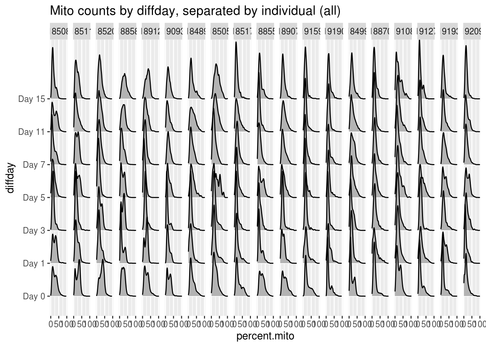 Quality control for exclusively the first round of experiments (6 individuals)
max.98 <- quantile(exp1$nCount_RNA, 0.98)
ggplot(exp1, aes(x = nCount_RNA, y = individual, height=..density..)) +
geom_density_ridges() +
scale_x_continuous(limits = c(0, max.98), breaks=seq(0, max.98, max.98))+
ggtitle("Read counts by individual (round 1)")Picking joint bandwidth of 71.7Warning: Removed 6251 rows containing non-finite values
(stat_density_ridges).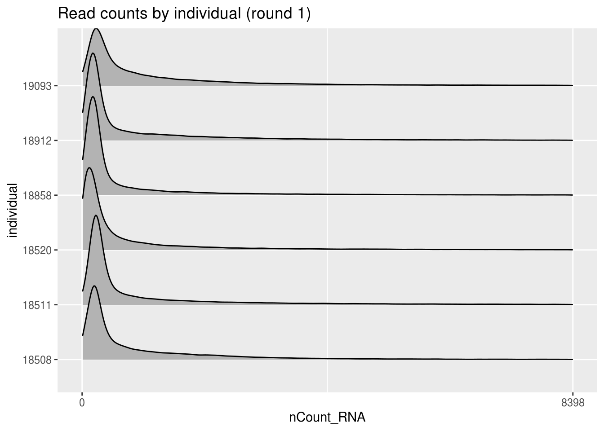
ggplot(exp1, aes(x = nCount_RNA, y = individual, height=..density..)) +
geom_density_ridges() +
scale_x_continuous(limits = c(0, max.98), breaks=seq(0, max.98, max.98)) +
facet_grid(~diffday) +
ggtitle("Read counts by individual, separated by diffday (round 1)")Picking joint bandwidth of 48.1Picking joint bandwidth of 131Picking joint bandwidth of 191Picking joint bandwidth of 85.3Picking joint bandwidth of 102Picking joint bandwidth of 86Picking joint bandwidth of 129Warning: Removed 6251 rows containing non-finite values
(stat_density_ridges).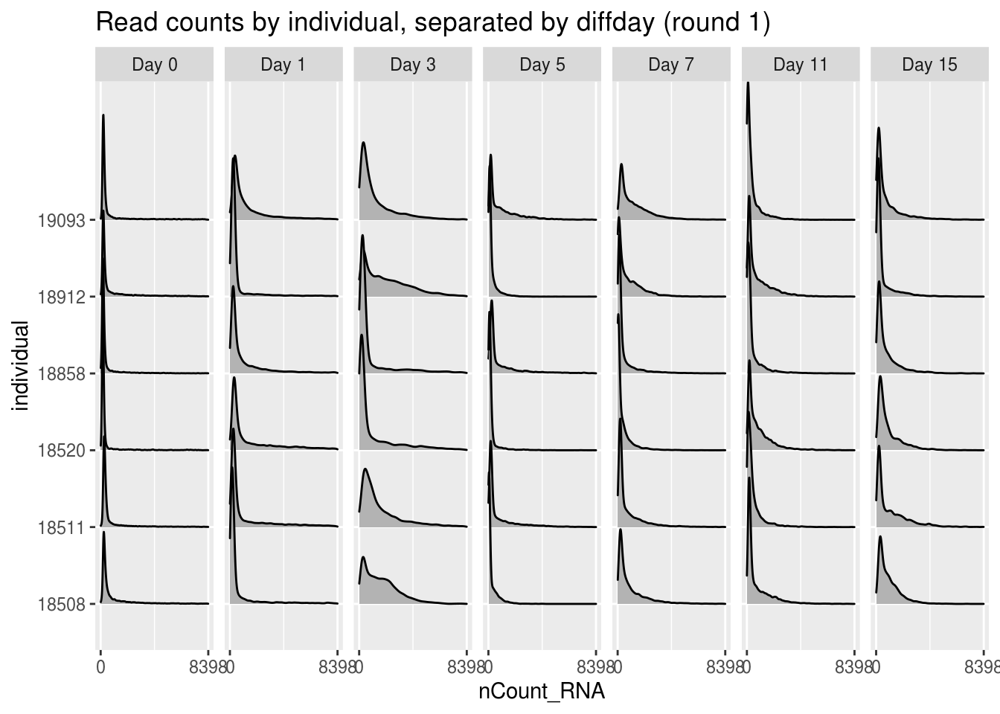
max.98 <- quantile(exp1$nCount_RNA, 0.98)
ggplot(exp1, aes(x = nCount_RNA, y = diffday, height=..density..)) +
geom_density_ridges() +
scale_x_continuous(limits = c(0, max.98), breaks=seq(0, max.98, max.98)) +
ggtitle("Read counts by diffday (round 1)")Picking joint bandwidth of 82Warning: Removed 6251 rows containing non-finite values
(stat_density_ridges).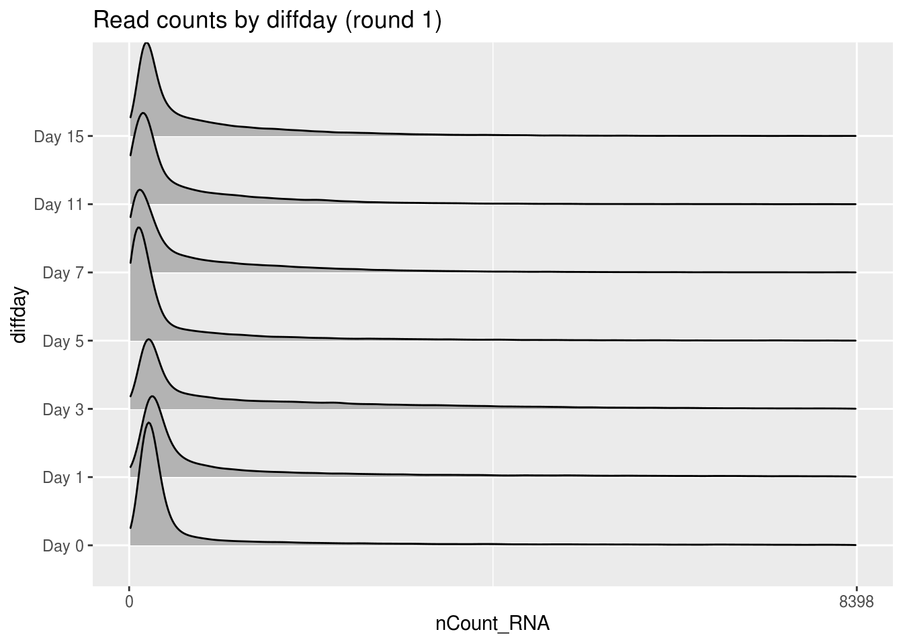
ggplot(exp1, aes(x = nCount_RNA, y = diffday, height=..density..)) +
geom_density_ridges() +
scale_x_continuous(limits = c(0, max.98), breaks=seq(0, max.98, max.98)) +
facet_grid(~individual) +
ggtitle("Read counts by diffday, separated by individual (round 1)")Picking joint bandwidth of 108Picking joint bandwidth of 132Picking joint bandwidth of 113Picking joint bandwidth of 78.2Picking joint bandwidth of 107Picking joint bandwidth of 124Warning: Removed 6251 rows containing non-finite values
(stat_density_ridges).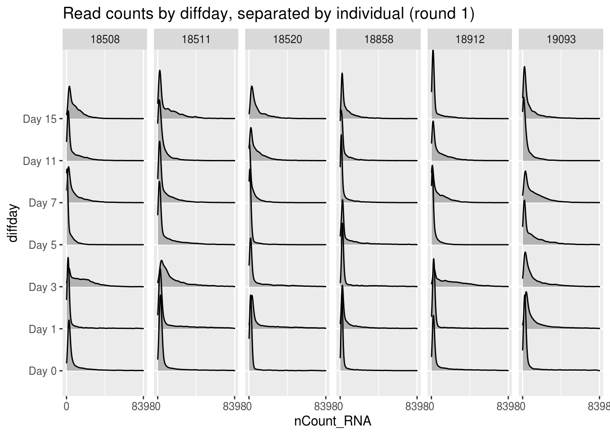
max.98 <- quantile(exp1$nFeature_RNA, 0.98)
ggplot(exp1, aes(x = nFeature_RNA, y = individual, height=..density..)) +
geom_density_ridges() +
scale_x_continuous(limits = c(0, max.98), breaks=seq(0, max.98, max.98)) +
ggtitle("Gene counts by individual (round 1)")Picking joint bandwidth of 39.8Warning: Removed 6248 rows containing non-finite values
(stat_density_ridges).ggplot(exp1, aes(x = nFeature_RNA, y = individual, height=..density..)) +
geom_density_ridges() +
scale_x_continuous(limits = c(0, max.98), breaks=seq(0, max.98, max.98)) +
facet_grid(~diffday) +
ggtitle("Gene counts by individual, separated by diffday (round 1)")Picking joint bandwidth of 27.2Picking joint bandwidth of 67.2Picking joint bandwidth of 85.7Picking joint bandwidth of 48.4Picking joint bandwidth of 55.1Picking joint bandwidth of 47.1Picking joint bandwidth of 65.1Warning: Removed 6248 rows containing non-finite values
(stat_density_ridges).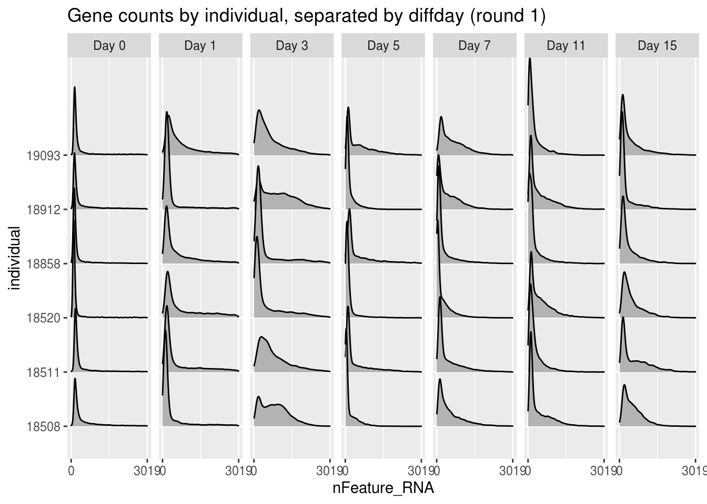
max.98 <- quantile(exp1$nFeature_RNA, 0.98)
ggplot(exp1, aes(x = nFeature_RNA, y = diffday, height=..density..)) +
geom_density_ridges() +
scale_x_continuous(limits = c(0, max.98), breaks=seq(0, max.98, max.98)) +
ggtitle("Gene counts by diffday (round 1)")Picking joint bandwidth of 43.3Warning: Removed 6248 rows containing non-finite values
(stat_density_ridges).ggplot(exp1, aes(x = nFeature_RNA, y = diffday, height=..density..)) +
geom_density_ridges() +
scale_x_continuous(limits = c(0, max.98), breaks=seq(0, max.98, max.98)) +
facet_grid(~individual) +
ggtitle("Gene counts by diffday, separated by individual (round 1)")Picking joint bandwidth of 55Picking joint bandwidth of 67.4Picking joint bandwidth of 57.2Picking joint bandwidth of 44.5Picking joint bandwidth of 50.8Picking joint bandwidth of 64.4Warning: Removed 6248 rows containing non-finite values
(stat_density_ridges).ggplot(exp1, aes(x = percent.mito, y = individual, height=..density..)) +
geom_density_ridges() +
scale_x_continuous(limits = c(0, 100), breaks=seq(0, 100, 20)) +
ggtitle("Mito counts by individual (round 1)")Picking joint bandwidth of 1.35ggplot(exp1, aes(x = percent.mito, y = individual, height=..density..)) +
geom_density_ridges() +
scale_x_continuous(limits = c(0, 100), breaks=seq(0, 100, 50)) +
facet_grid(~diffday) +
ggtitle("Mito counts by individual, separated by diffday (round 1)")Picking joint bandwidth of 1.92Picking joint bandwidth of 1.79Picking joint bandwidth of 1.39Picking joint bandwidth of 1.75Picking joint bandwidth of 1.61Picking joint bandwidth of 2.04Picking joint bandwidth of 2.16ggplot(exp1, aes(x = percent.mito, y = diffday, height=..density..)) +
geom_density_ridges() +
scale_x_continuous(limits = c(0, 100), breaks=seq(0, 100, 20)) +
ggtitle("Mito counts by diffday (round 1)")Picking joint bandwidth of 1.38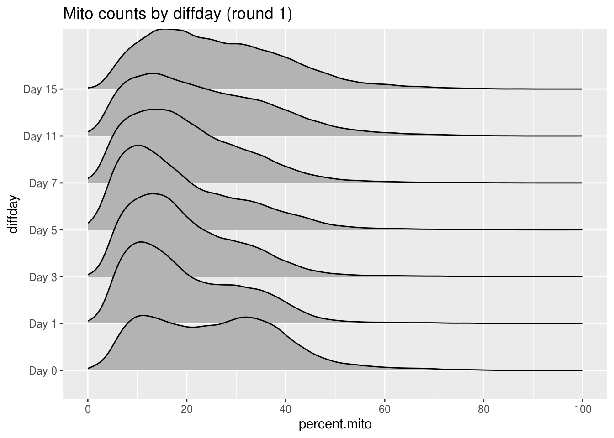
ggplot(exp1, aes(x = percent.mito, y = diffday, height=..density..)) +
geom_density_ridges() +
scale_x_continuous(limits = c(0, 100), breaks=seq(0, 100, 50)) +
facet_grid(~individual) +
ggtitle("Mito counts by diffday, separated by individual (round 1)")Picking joint bandwidth of 1.93Picking joint bandwidth of 1.9Picking joint bandwidth of 1.84Picking joint bandwidth of 1.87Picking joint bandwidth of 1.67Picking joint bandwidth of 1.64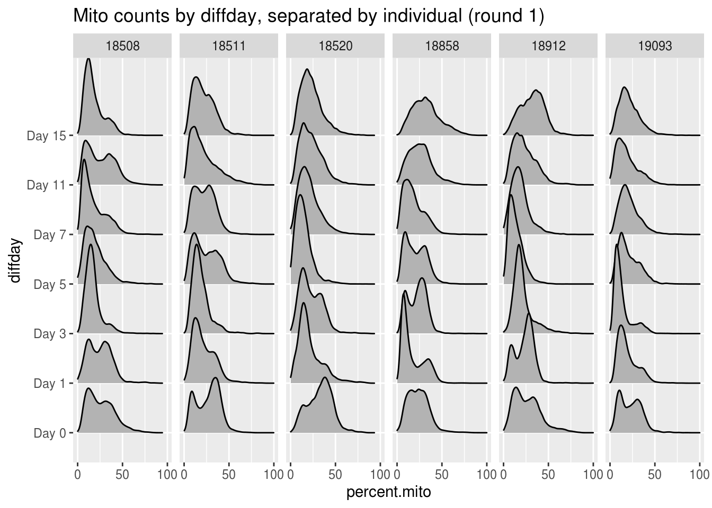
Quality Control for Round 2
max.98 <- quantile(exp2$nCount_RNA, 0.98)
ggplot(exp2, aes(x = nCount_RNA, y = individual, height=..density..)) +
geom_density_ridges() +
scale_x_continuous(limits = c(0, max.98), breaks=seq(0, max.98, max.98))+
ggtitle("Read counts by individual (round 2)")Picking joint bandwidth of 130Warning: Removed 2877 rows containing non-finite values
(stat_density_ridges).ggplot(exp2, aes(x = nCount_RNA, y = individual, height=..density..)) +
geom_density_ridges() +
scale_x_continuous(limits = c(0, max.98), breaks=seq(0, max.98, max.98)) +
facet_grid(~diffday) +
ggtitle("Read counts by individual, separated by diffday (round 2)")Picking joint bandwidth of 213Picking joint bandwidth of 219Picking joint bandwidth of 223Picking joint bandwidth of 148Picking joint bandwidth of 150Picking joint bandwidth of 149Picking joint bandwidth of 184Warning: Removed 2877 rows containing non-finite values
(stat_density_ridges).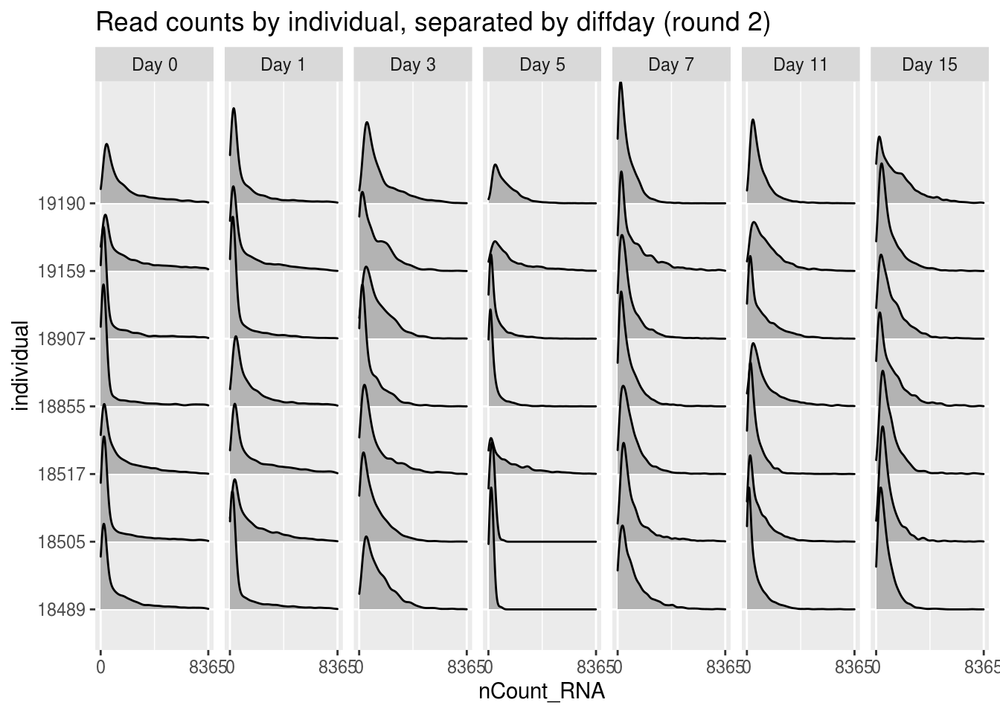
max.98 <- quantile(exp2$nCount_RNA, 0.98)
ggplot(exp2, aes(x = nCount_RNA, y = diffday, height=..density..)) +
geom_density_ridges() +
scale_x_continuous(limits = c(0, max.98), breaks=seq(0, max.98, max.98)) +
ggtitle("Read counts by diffday (round 2)")Picking joint bandwidth of 134Warning: Removed 2877 rows containing non-finite values
(stat_density_ridges).ggplot(exp2, aes(x = nCount_RNA, y = diffday, height=..density..)) +
geom_density_ridges() +
scale_x_continuous(limits = c(0, max.98), breaks=seq(0, max.98, max.98)) +
facet_grid(~individual) +
ggtitle("Read counts by diffday, separated by individual (round 2)")Picking joint bandwidth of 142Picking joint bandwidth of 170Picking joint bandwidth of 218Picking joint bandwidth of 157Picking joint bandwidth of 155Picking joint bandwidth of 248Picking joint bandwidth of 195Warning: Removed 2877 rows containing non-finite values
(stat_density_ridges).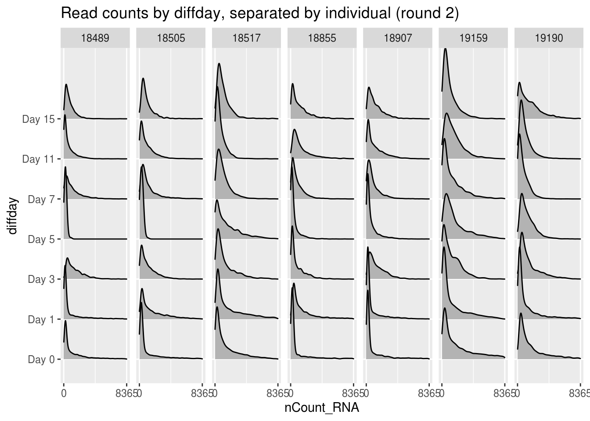
max.98 <- quantile(exp2$nFeature_RNA, 0.98)
ggplot(exp2, aes(x = nFeature_RNA, y = individual, height=..density..)) +
geom_density_ridges() +
scale_x_continuous(limits = c(0, max.98), breaks=seq(0, max.98, max.98)) +
ggtitle("Gene counts by individual (round 2)")Picking joint bandwidth of 64.2Warning: Removed 2878 rows containing non-finite values
(stat_density_ridges).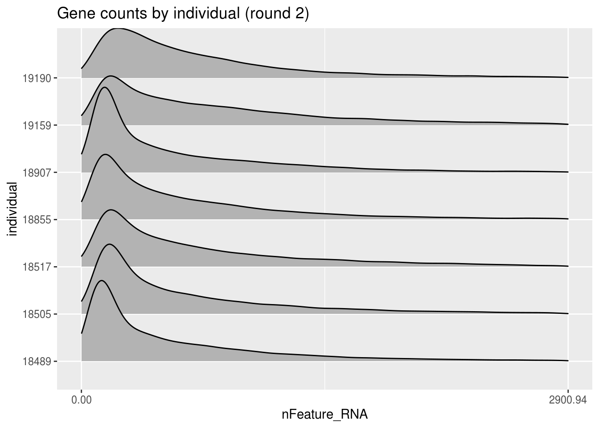
ggplot(exp2, aes(x = nFeature_RNA, y = individual, height=..density..)) +
geom_density_ridges() +
scale_x_continuous(limits = c(0, max.98), breaks=seq(0, max.98, max.98)) +
facet_grid(~diffday) +
ggtitle("Gene counts by individual, separated by diffday (round 2)")Picking joint bandwidth of 94Picking joint bandwidth of 99.6Picking joint bandwidth of 98.2Picking joint bandwidth of 68.5Picking joint bandwidth of 76.5Picking joint bandwidth of 71.9Picking joint bandwidth of 91.3Warning: Removed 2878 rows containing non-finite values
(stat_density_ridges).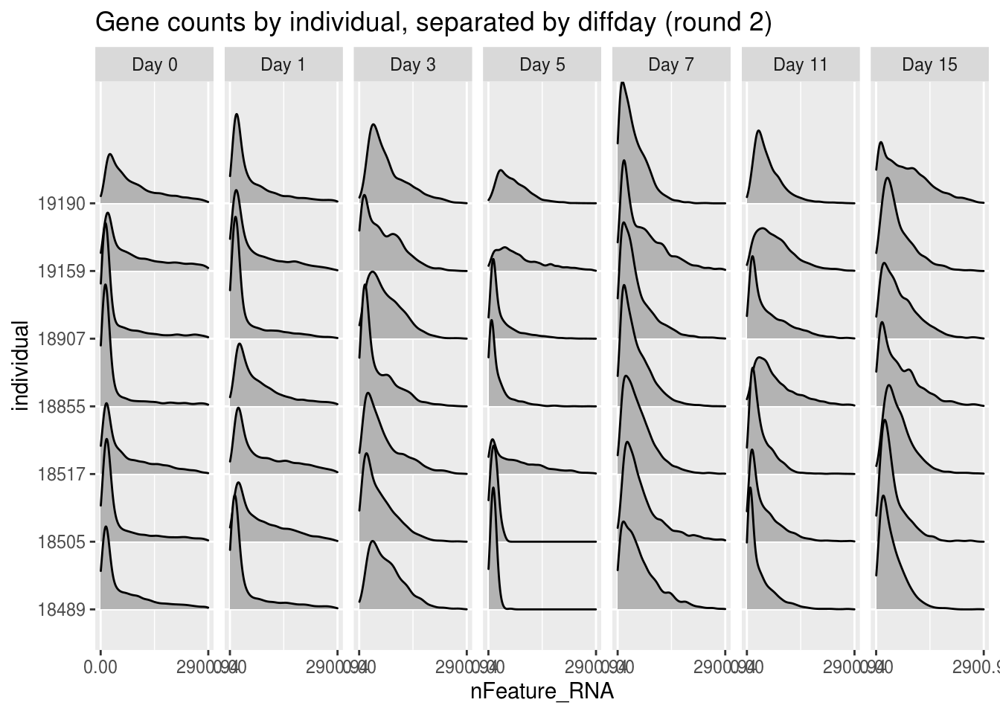
max.98 <- quantile(exp2$nFeature_RNA, 0.98)
ggplot(exp2, aes(x = nFeature_RNA, y = diffday, height=..density..)) +
geom_density_ridges() +
scale_x_continuous(limits = c(0, max.98), breaks=seq(0, max.98, max.98)) +
ggtitle("Gene counts by diffday (round 2)")Picking joint bandwidth of 65.8Warning: Removed 2878 rows containing non-finite values
(stat_density_ridges).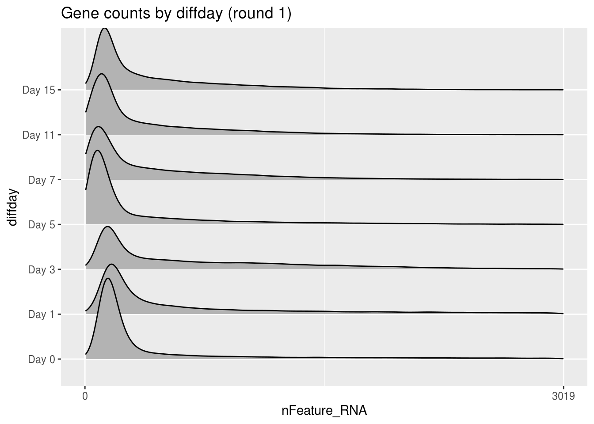
ggplot(exp2, aes(x = nFeature_RNA, y = diffday, height=..density..)) +
geom_density_ridges() +
scale_x_continuous(limits = c(0, max.98), breaks=seq(0, max.98, max.98)) +
facet_grid(~individual) +
ggtitle("Gene counts by diffday, separated by individual (round 2)")Picking joint bandwidth of 70.1Picking joint bandwidth of 76.9Picking joint bandwidth of 98.2Picking joint bandwidth of 80.6Picking joint bandwidth of 75.1Picking joint bandwidth of 108Picking joint bandwidth of 90.4Warning: Removed 2878 rows containing non-finite values
(stat_density_ridges).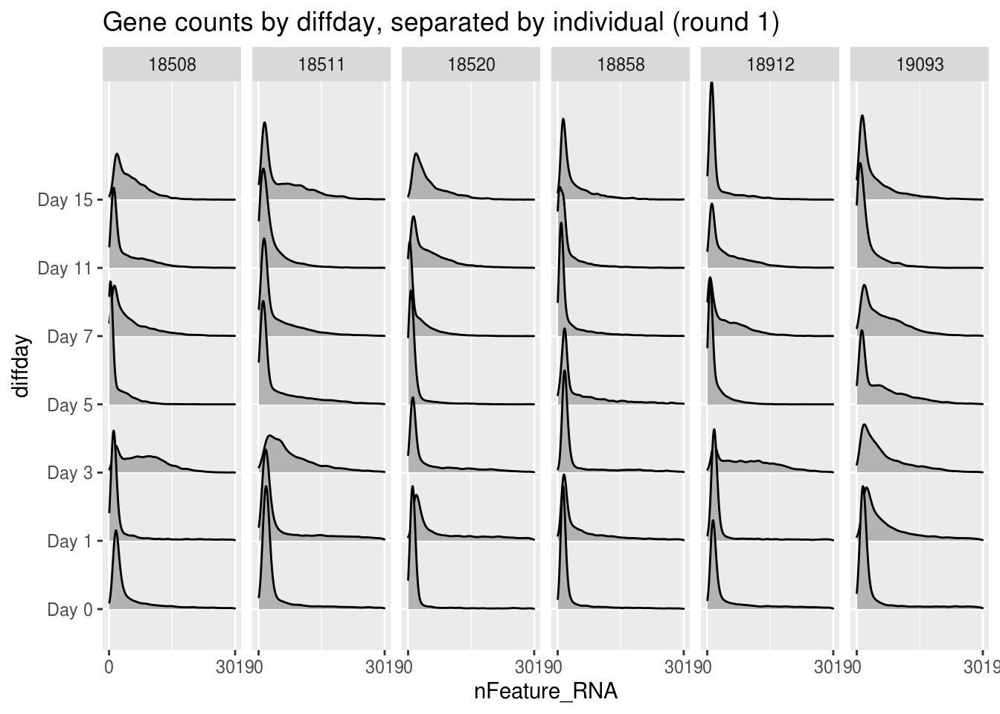
ggplot(exp2, aes(x = percent.mito, y = individual, height=..density..)) +
geom_density_ridges() +
scale_x_continuous(limits = c(0, 100), breaks=seq(0, 100, 20)) +
ggtitle("Mito counts by individual (round 2)")Picking joint bandwidth of 1.54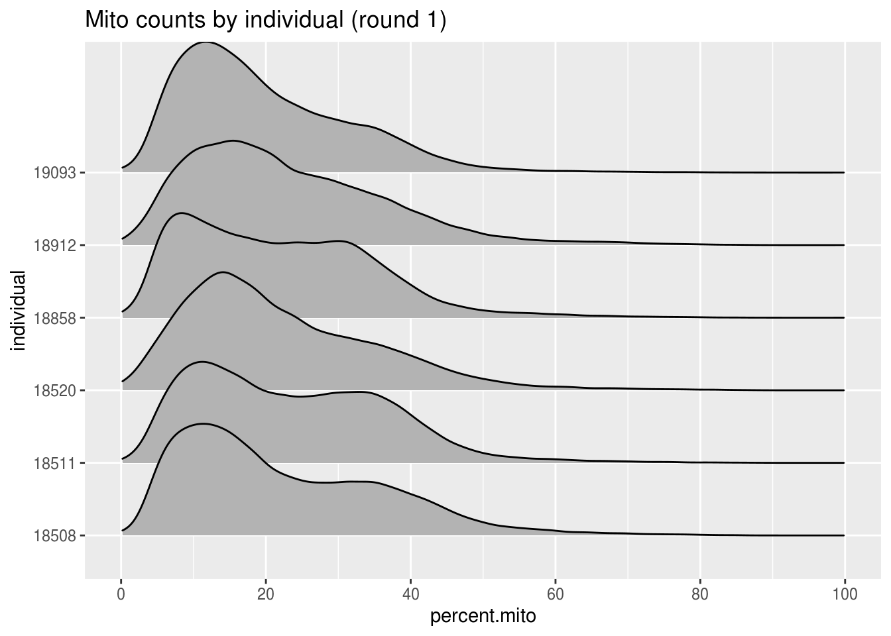
ggplot(exp2, aes(x = percent.mito, y = individual, height=..density..)) +
geom_density_ridges() +
scale_x_continuous(limits = c(0, 100), breaks=seq(0, 100, 50)) +
facet_grid(~diffday) +
ggtitle("Mito counts by individual, separated by diffday (round 2)")Picking joint bandwidth of 2.74Picking joint bandwidth of 2.06Picking joint bandwidth of 1.56Picking joint bandwidth of 3.17Picking joint bandwidth of 1.94Picking joint bandwidth of 2.09Picking joint bandwidth of 2.23
ggplot(exp2, aes(x = percent.mito, y = diffday, height=..density..)) +
geom_density_ridges() +
scale_x_continuous(limits = c(0, 100), breaks=seq(0, 100, 20)) +
ggtitle("Mito counts by diffday (round 2)")Picking joint bandwidth of 1.48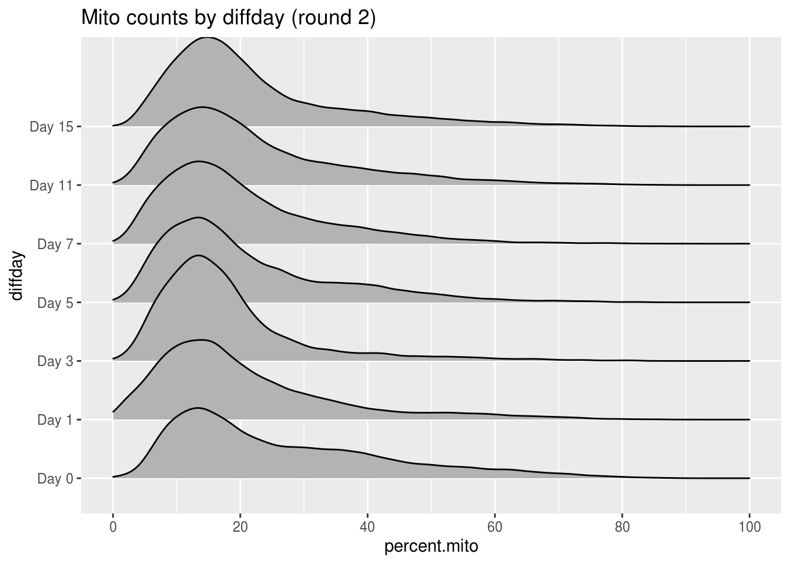
ggplot(exp2, aes(x = percent.mito, y = diffday, height=..density..)) +
geom_density_ridges() +
scale_x_continuous(limits = c(0, 100), breaks=seq(0, 100, 50)) +
facet_grid(~individual) +
ggtitle("Mito counts by diffday, separated by individual (round 2)")Picking joint bandwidth of 2.59Picking joint bandwidth of 3.09Picking joint bandwidth of 2.19Picking joint bandwidth of 2.25Picking joint bandwidth of 2.24Picking joint bandwidth of 1.77Picking joint bandwidth of 1.66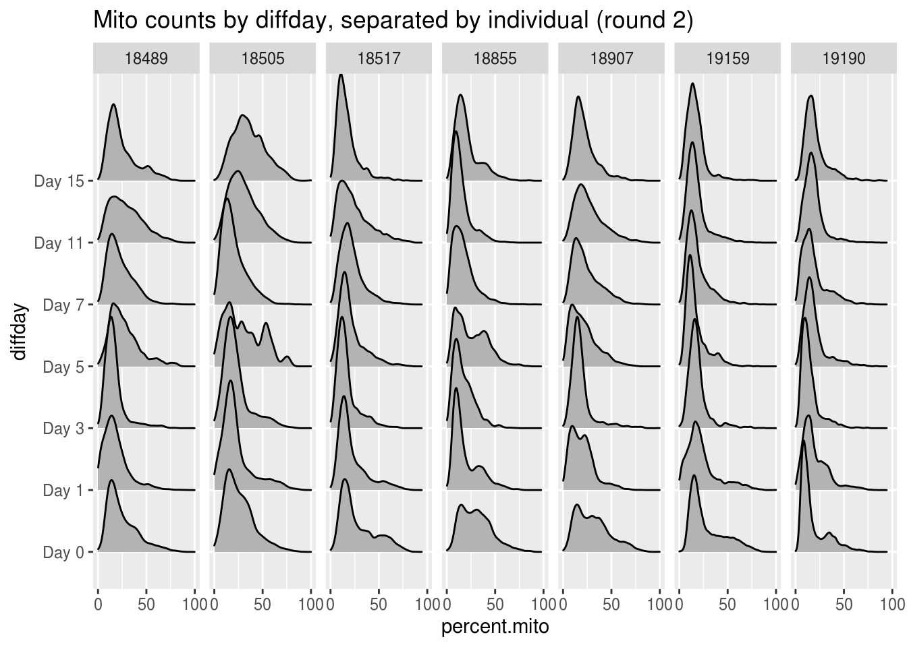
Quality Control for Round 3
max.98 <- quantile(exp3$nCount_RNA, 0.98)
ggplot(exp3, aes(x = nCount_RNA, y = individual, height=..density..)) +
geom_density_ridges() +
scale_x_continuous(limits = c(0, max.98), breaks=seq(0, max.98, max.98)) +
ggtitle("Read counts by individual (round 3)")Picking joint bandwidth of 137Warning: Removed 2380 rows containing non-finite values
(stat_density_ridges).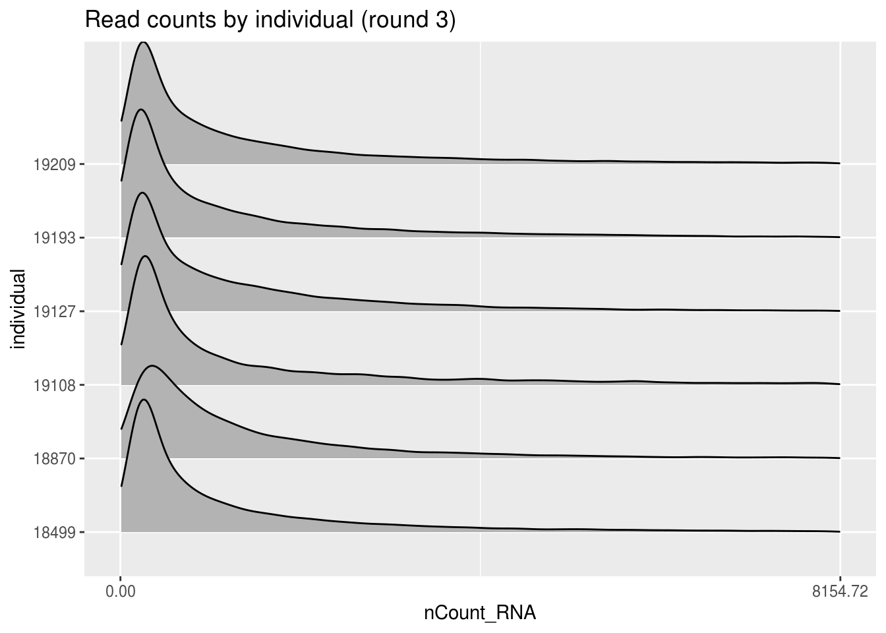
ggplot(exp3, aes(x = nCount_RNA, y = individual, height=..density..)) +
geom_density_ridges() +
scale_x_continuous(limits = c(0, max.98), breaks=seq(0, max.98, max.98)) +
facet_grid(~diffday) +
ggtitle("Read counts by individual, separated by diffday (round 3)")Picking joint bandwidth of 248Picking joint bandwidth of 198Picking joint bandwidth of 206Picking joint bandwidth of 177Picking joint bandwidth of 149Picking joint bandwidth of 173Picking joint bandwidth of 178Warning: Removed 2380 rows containing non-finite values
(stat_density_ridges).max.98 <- quantile(exp3$nCount_RNA, 0.98)
ggplot(exp3, aes(x = nCount_RNA, y = diffday, height=..density..)) +
geom_density_ridges() +
scale_x_continuous(limits = c(0, max.98), breaks=seq(0, max.98, max.98)) +
ggtitle("Read counts by diffday (round 3)")Picking joint bandwidth of 138Warning: Removed 2380 rows containing non-finite values
(stat_density_ridges).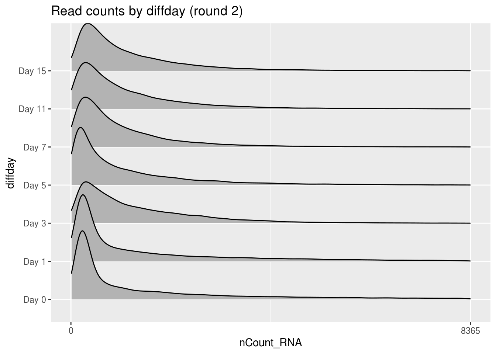
ggplot(exp3, aes(x = nCount_RNA, y = diffday, height=..density..)) +
geom_density_ridges() +
scale_x_continuous(limits = c(0, max.98), breaks=seq(0, max.98, max.98)) +
facet_grid(~individual) +
ggtitle("Read counts by diffday, separated by individual (round 3)")Picking joint bandwidth of 170Picking joint bandwidth of 204Picking joint bandwidth of 180Picking joint bandwidth of 195Picking joint bandwidth of 185Picking joint bandwidth of 205Warning: Removed 2380 rows containing non-finite values
(stat_density_ridges).max.98 <- quantile(exp3$nFeature_RNA, 0.98)
ggplot(exp3, aes(x = nFeature_RNA, y = individual, height=..density..)) +
geom_density_ridges() +
scale_x_continuous(limits = c(0, max.98), breaks=seq(0, max.98, max.98)) +
ggtitle("Gene counts by individual (round 3)")Picking joint bandwidth of 69Warning: Removed 2380 rows containing non-finite values
(stat_density_ridges).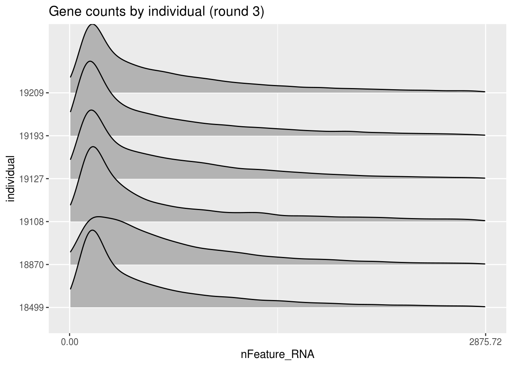
ggplot(exp3, aes(x = nFeature_RNA, y = individual, height=..density..)) +
geom_density_ridges() +
scale_x_continuous(limits = c(0, max.98), breaks=seq(0, max.98, max.98)) +
facet_grid(~diffday) +
ggtitle("Gene counts by individual, separated by diffday (round 3)")Picking joint bandwidth of 118Picking joint bandwidth of 98.3Picking joint bandwidth of 91.3Picking joint bandwidth of 89.1Picking joint bandwidth of 76Picking joint bandwidth of 88.4Picking joint bandwidth of 90Warning: Removed 2380 rows containing non-finite values
(stat_density_ridges).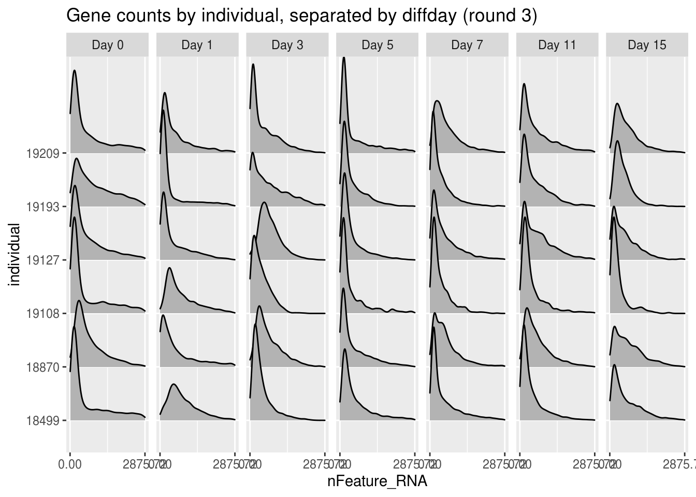
max.98 <- quantile(exp3$nFeature_RNA, 0.98)
ggplot(exp3, aes(x = nFeature_RNA, y = diffday, height=..density..)) +
geom_density_ridges() +
scale_x_continuous(limits = c(0, max.98), breaks=seq(0, max.98, max.98)) +
ggtitle("Gene counts by diffday (round 3)")Picking joint bandwidth of 69.3Warning: Removed 2380 rows containing non-finite values
(stat_density_ridges).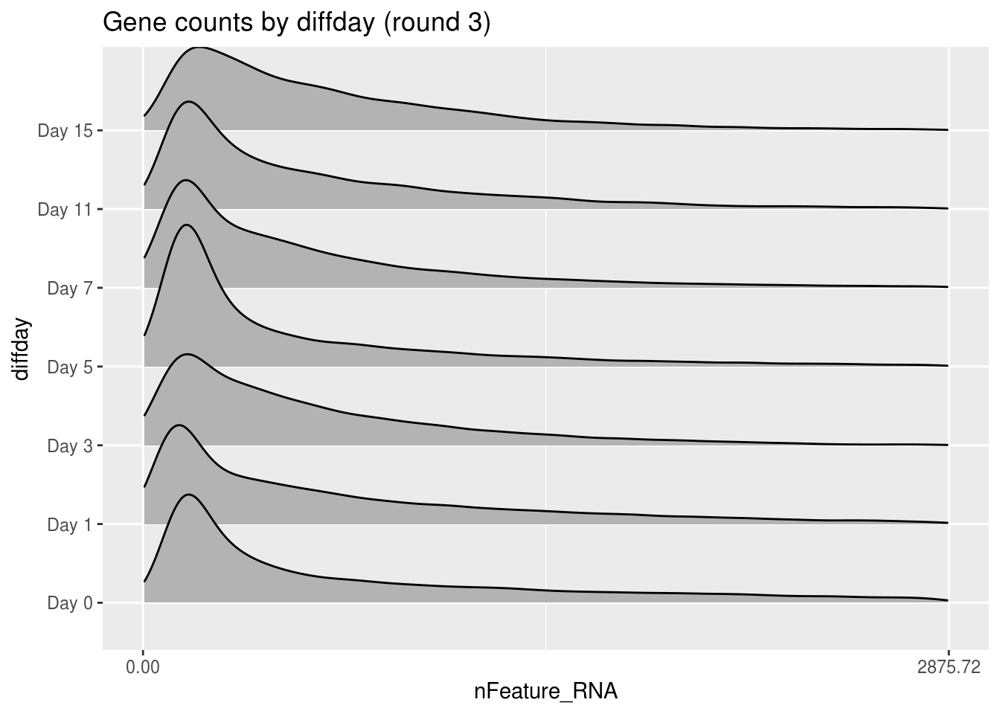
ggplot(exp3, aes(x = nFeature_RNA, y = diffday, height=..density..)) +
geom_density_ridges() +
scale_x_continuous(limits = c(0, max.98), breaks=seq(0, max.98, max.98)) +
facet_grid(~individual) +
ggtitle("Gene counts by diffday, separated by individual (round 3)")Picking joint bandwidth of 84.7Picking joint bandwidth of 98.7Picking joint bandwidth of 91.8Picking joint bandwidth of 94Picking joint bandwidth of 84.9Picking joint bandwidth of 104Warning: Removed 2380 rows containing non-finite values
(stat_density_ridges).
max.98 <- quantile(exp3$percent.mito, 0.98)
ggplot(exp3, aes(x = percent.mito, y = individual, height=..density..)) +
geom_density_ridges() +
scale_x_continuous(limits = c(0, 100), breaks=seq(0, 100, 20)) +
ggtitle("Mito counts by individual (round 3)")Picking joint bandwidth of 1.57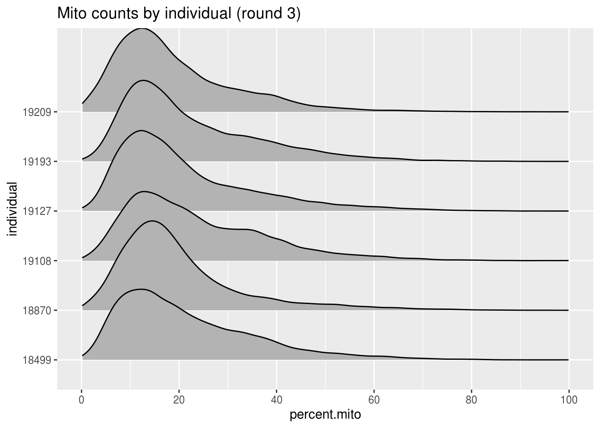
ggplot(exp3, aes(x = percent.mito, y = individual, height=..density..)) +
geom_density_ridges() +
scale_x_continuous(limits = c(0, 100), breaks=seq(0, 100, 50)) +
facet_grid(~diffday) +
ggtitle("Mito counts by individual, separated by diffday (round 3)")Picking joint bandwidth of 1.91Picking joint bandwidth of 2.2Picking joint bandwidth of 2.1Picking joint bandwidth of 2.94Picking joint bandwidth of 2.2Picking joint bandwidth of 2.14Picking joint bandwidth of 2.48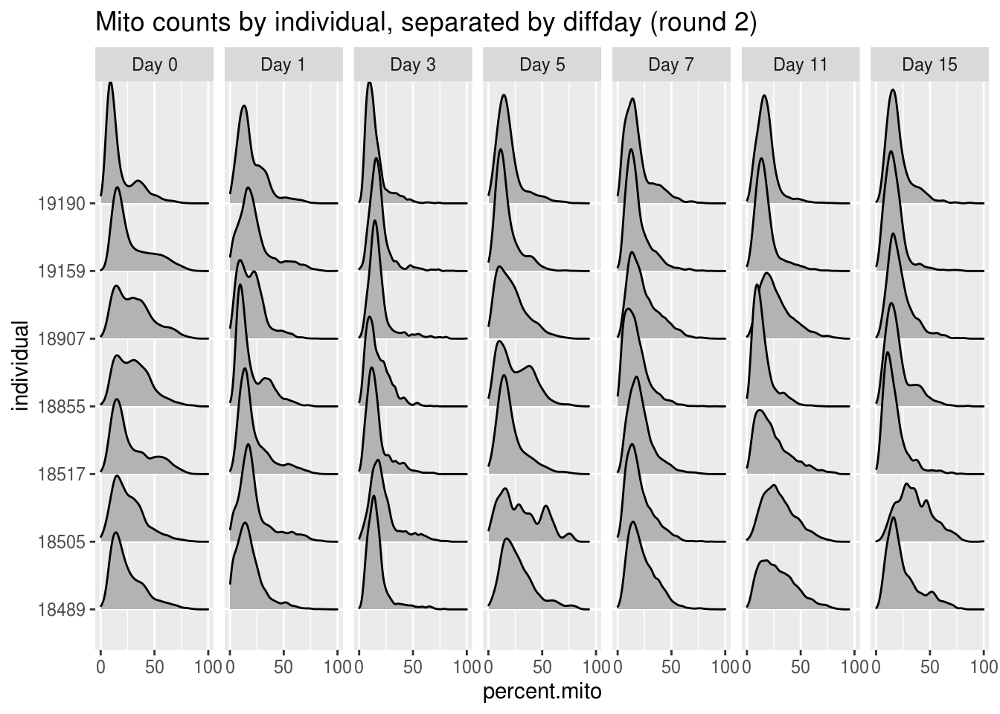
ggplot(exp3, aes(x = percent.mito, y = diffday, height=..density..)) +
geom_density_ridges() +
scale_x_continuous(limits = c(0, 100), breaks=seq(0, 100, 20)) +
ggtitle("Mito counts by diffday (round 3)")Picking joint bandwidth of 1.54ggplot(exp3, aes(x = percent.mito, y = diffday, height=..density..)) +
geom_density_ridges() +
scale_x_continuous(limits = c(0, 100), breaks=seq(0, 100, 50)) +
facet_grid(~individual) +
ggtitle("Mito counts by diffday, separated by individual (round 3)")Picking joint bandwidth of 2.1Picking joint bandwidth of 1.94Picking joint bandwidth of 3.39Picking joint bandwidth of 2.13Picking joint bandwidth of 2.1Picking joint bandwidth of 2.04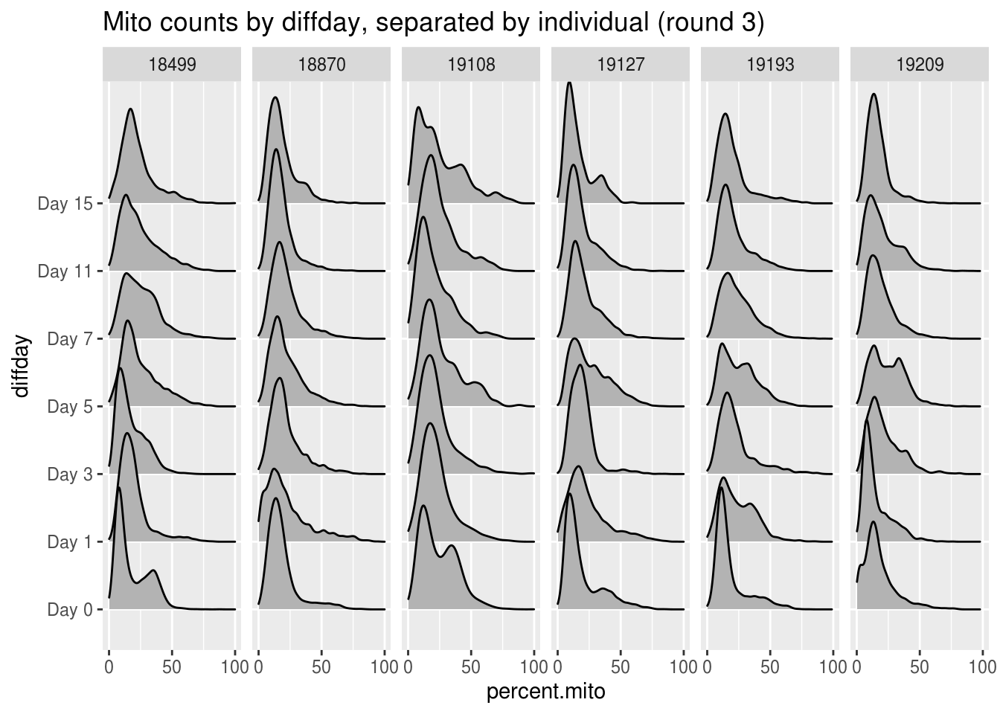
sessionInfo()R version 3.6.1 (2019-07-05)
Platform: x86_64-pc-linux-gnu (64-bit)
Running under: Scientific Linux 7.4 (Nitrogen)
Matrix products: default
BLAS/LAPACK: /software/openblas-0.2.19-el7-x86_64/lib/libopenblas_haswellp-r0.2.19.so
locale:
[1] LC_CTYPE=en_US.UTF-8 LC_NUMERIC=C
[3] LC_TIME=en_US.UTF-8 LC_COLLATE=en_US.UTF-8
[5] LC_MONETARY=en_US.UTF-8 LC_MESSAGES=en_US.UTF-8
[7] LC_PAPER=en_US.UTF-8 LC_NAME=C
[9] LC_ADDRESS=C LC_TELEPHONE=C
[11] LC_MEASUREMENT=en_US.UTF-8 LC_IDENTIFICATION=C
attached base packages:
[1] stats graphics grDevices utils datasets methods base
other attached packages:
[1] Seurat_3.1.1 ggridges_0.5.1 ggplot2_3.2.1
loaded via a namespace (and not attached):
[1] tsne_0.1-3 nlme_3.1-140 bitops_1.0-6
[4] fs_1.3.1 RcppAnnoy_0.0.13 RColorBrewer_1.1-2
[7] httr_1.4.1 rprojroot_1.3-2 sctransform_0.2.0
[10] tools_3.6.1 backports_1.1.5 R6_2.4.0
[13] irlba_2.3.3 KernSmooth_2.23-15 uwot_0.1.4
[16] lazyeval_0.2.2 colorspace_1.4-1 npsurv_0.4-0
[19] withr_2.1.2 gridExtra_2.3 tidyselect_0.2.5
[22] compiler_3.6.1 git2r_0.26.1 plotly_4.9.0
[25] labeling_0.3 caTools_1.17.1.2 scales_1.1.0
[28] lmtest_0.9-37 pbapply_1.4-2 stringr_1.4.0
[31] digest_0.6.21 rmarkdown_1.13 R.utils_2.9.0
[34] pkgconfig_2.0.3 htmltools_0.4.0 bibtex_0.4.2
[37] htmlwidgets_1.5.1 rlang_0.4.0 farver_2.0.1
[40] zoo_1.8-6 jsonlite_1.6 ica_1.0-2
[43] gtools_3.8.1 dplyr_0.8.3 R.oo_1.22.0
[46] magrittr_1.5 Matrix_1.2-18 Rcpp_1.0.3
[49] munsell_0.5.0 ape_5.3 reticulate_1.13
[52] lifecycle_0.1.0 R.methodsS3_1.7.1 stringi_1.4.3
[55] whisker_0.3-2 yaml_2.2.0 gbRd_0.4-11
[58] MASS_7.3-51.4 gplots_3.0.1.1 Rtsne_0.15
[61] plyr_1.8.4 grid_3.6.1 parallel_3.6.1
[64] gdata_2.18.0 listenv_0.7.0 promises_1.1.0
[67] ggrepel_0.8.1 crayon_1.3.4 lattice_0.20-38
[70] cowplot_1.0.0 splines_3.6.1 SDMTools_1.1-221.1
[73] zeallot_0.1.0 knitr_1.23 pillar_1.4.2
[76] igraph_1.2.4.1 reshape2_1.4.3 future.apply_1.3.0
[79] codetools_0.2-16 leiden_0.3.1 glue_1.3.1
[82] evaluate_0.14 lsei_1.2-0 metap_1.1
[85] RcppParallel_4.4.4 data.table_1.12.4 png_0.1-7
[88] vctrs_0.2.0 httpuv_1.5.2 Rdpack_0.11-0
[91] tidyr_1.0.0 gtable_0.3.0 RANN_2.6.1
[94] purrr_0.3.2 future_1.14.0 assertthat_0.2.1
[97] xfun_0.8 rsvd_1.0.1 later_1.0.0
[100] viridisLite_0.3.0 survival_2.44-1.1 tibble_2.1.3
[103] workflowr_1.5.0 cluster_2.1.0 globals_0.12.4
[106] fitdistrplus_1.0-14 ROCR_1.0-7